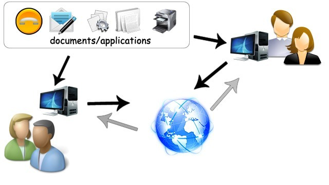
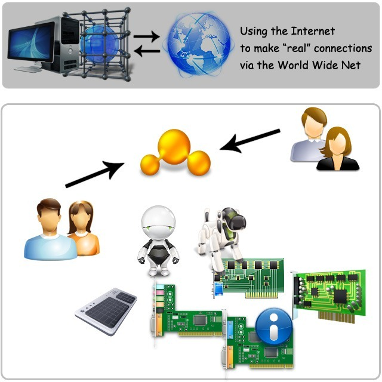

We’ve been in the World Wide Web "phase” for a little over 2 decades. A lot has happened and a lot has changed in this period. This post is not about what has happened but rather what will, or needs to happen next.
In my mind it is inevitable and as an entrepreneur or business if you want to stay ahead of the “S” curve, this is the time to get cracking. The World Wide Net is about getting out of and beyond the box.
But first let me level-set a couple of terms for this discussion.
Internet: Internet is a short form for the word Internetwork. It is essentially an infrastructure comprised of hardware communication devices providing connectivity between computers.
World Wide Web: The World Wide Web is web of interconnected documents and application that use the Internet as a transport medium. As a visual, what you see depicted in the image below is the current state.

You have:
- Computers connected via the Internet sharing documents and applications
- Humans primarily living in a virtual space
There are a few problems as I see it, with this status. Humans need more than “virtual”, we need to be able to share and feel more than we currently can. Essentially, we need to get out of and beyond the box. How is this going to happen and what is it going to take?
A Browser as we know it today is not going to cut it, for many reasons. Browsers confine us even more to the “box”.
Mobile phones and devices (Android and iPhone/iPad) have taken a step in the right direction and that is, native application (available from the store) that have access to hardware on the device such as the gyro, accelerometer, GPS etc. These differences make the big difference in our experience between what we can do over the Internet with our PCs and mobile devices. Gaming consoles such as the XBOX and Play Station provide other capabilities such as high performance HD graphics, and have bridged a gap by bringing the Internet to these devices.
World Wide Net is more than the two (mobile phones and gaming consoles) combined. First Gaming consoles and PCs will need to merge and the browser needs to go. Don’t get me wrong, I love the direction browsers are moving in and I spend virtually all of my time working with browsers. As a result I feel the constraints more so, I guess. Browsers provide us with a sandbox and that’s important but we need more then what this sandbox provides us.
So imagine a world where your PC has all of the capabilities of a PC and a gaming console and in addition the operating system rather than the browser provides the sandbox. The sandbox the operating system provides is similar to what mobile devices provide for applications downloaded from the app store. When applications need access to certain hardware (like the GPS system) they ask for permission.
But beyond the box goes further than the box (obviously). So the World Wide Net is about having access to hardware devices that may be connected directly to your PC via a USB port or serial port or via your home network. The devices I’m talking about don’t exist yet (for the most part). Some are around the corner but most of them are yet to be dreamed up. Devices that are around the corner are devices such as networked refrigerators, microwave ovens, music system etc..
These devices need to be programmable via an API and not just networked, such that any software engineer can program a certain class of device using this API.
Talking to peripheral and networked devices is already possible today and has been for many years now, but it requires native applications (written in C, C++, C#, Java etc.). User interfaces are going to be more “game like” than what we have today. All of this will require an operating system level sandbox rather than a browser based sandbox and the capabilities of programming languages such as those mentioned above, rather than HTML, SVG and JavaScript.
The image below shows you my vision of the World Wide Net. The Internet is still the transport/communications layer, but we move from the World Wide Web, to the World Wide Net, of connections out of and beyond the box, more "real". Where people you interact with on the World Wide Net can control devices connected to your computer via applications that run in the sandbox of the operating system.

Being an electronics engineer by qualification (It’s a hobby now), I can dream up a number of devices that I can build and hook up to my computer and share with friends and family and interact and socialize with them in the “real” world, beyond the box. But as I said, most devices (that I’m talking about) don’t exist yet. They are a new breed of devices we don’t have a need for today, primarily because we don’t have the means to use them.
We’ll still have browsers and a need for them in the era of the World Wide Net because we'll continue to share "documents", we just need go out of and beyond the box to share more the documents.